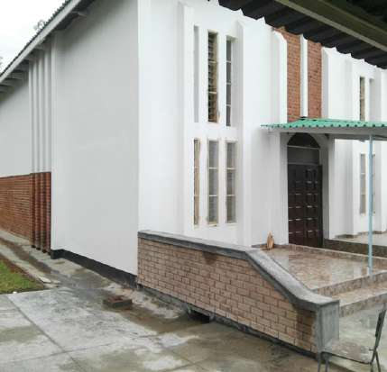
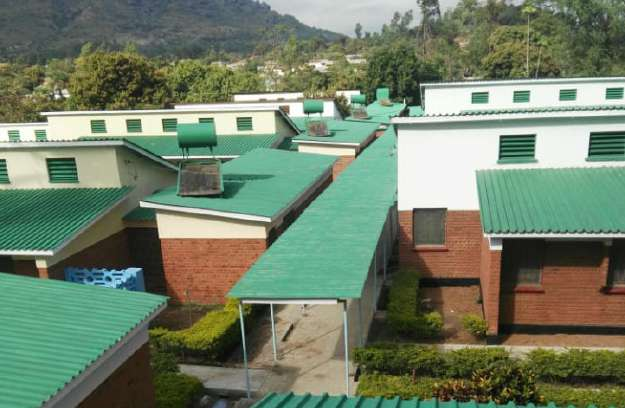
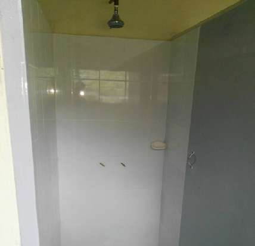
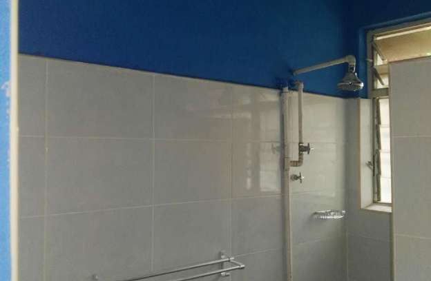

Project
Rehabilitation of St Peters Major Seminary
Client: Episcopal Conference of Malawi · Site: Zomba, 3 Miles




Project contact: Procurement Officer, +265 884 200 227
Explore construction services · Contact Urban and Rural Group